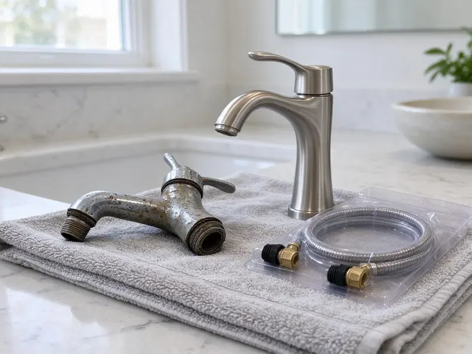

Gas Water Heater Replacement in Oregon City, OR
Keep a consistent supply of hot water in your Oregon City, OR home with our gas water heater replacement services.
- Fast, Reliable Service
- Expert Technicians
- Fast, Reliable Service
- Quality Brands

Cold Showers End Today. Replace Your Gas Water Heater in Oregon City, OR.
Most gas water heater replacements are finished in about three hours.
Gas Water Heater Replacement in Oregon City, OR Done in a Single Visit
When it is time for a new gas water heater in your Oregon City home, JFL Plumbing is your reliable partner. We assess your hot water needs, recommend the best unit for your household, and perform a safe, code-compliant replacement that stands the test of time.
Our expertise includes:
- Ensuring proper combustion and safety controls.
- Installation of all major gas water heater brands.
- Thermal expansion tank installs sized to your water pressure

Additional Plumbing Replacement Services in Oregon City, OR
When repairs are no longer enough, our replacement services in Oregon City, OR deliver durable upgrades that restore full performance.


Customers
Why Choose JFL Plumbing for Gas Water Heater Replacement in Oregon City, OR?
Choosing JFL Plumbing for your gas water heater replacement means choosing peace of mind. We prioritize safety and efficiency, so your new unit runs the way it should.
- Quality Brands, We work with leading manufacturers like Rheem, Bradford White and A. O. Smith, so you receive a durable and efficient gas water heater.
- Safety First, Gas appliances require careful handling, and our technicians are thoroughly trained in all safety protocols and code requirements for gas water heater installation.
- Energy Efficiency, We help you choose modern gas water heaters that can lower your energy bills compared to older models.
Citywide Coverage
No matter where your heater is installed in Oregon City, we can get it out and replace it. Attic and tight closet installs are part of our everyday work.
Experienced Team
Each JFL Plumbing technician is a specialist in gas appliance replacement, with the knowledge to safely disconnect your old unit, manage gas lines and install your new water heater. Every install follows manufacturer specifications and Oregon codes.
Safety-First Approach
We follow local plumbing and fuel gas code for venting, clearances, seismic strapping where required and relief valve discharge. We pull permits where required and leave the installation ready for the inspector.
Trusted Certified Oregon City Plumbing Services Professionals
At JFL Plumbing, we take pride in providing certified plumbing services throughout Oregon City, OR. Backed by leading industry credentials, our experienced plumbers combine technical skill with genuine customer care. Whether it is repair, installation, or maintenance, we follow strict safety and quality standards to deliver lasting results you can trust.
Call Us Now PHCC Plumbing Contractor Recognition
PHCC Plumbing Contractor Recognition Better Business Bureau (BBB) Accreditation
Better Business Bureau (BBB) Accreditation Angi Certified Pro
Angi Certified Pro ISO 9001 Quality Management Certification
ISO 9001 Quality Management CertificationProfessional Gas Water Heater Replacement Services in Oregon City, OR
Bradford White Gas Water Heater Installation in Oregon City
JFL Plumbing is a trusted installer of Bradford White gas water heaters in Oregon City. Known for their durability and American-made quality, Bradford White units are a popular choice for many Oregon homeowners. We confirm proper sizing and installation according to manufacturer specifications, extending the lifespan and efficiency of your new unit. Our technicians know their venting and gas connection requirements.

Commercial Gas Water Heater Replacement in Oregon City, OR
Beyond residential services, JFL Plumbing also handles commercial gas water heater replacement in Oregon City, OR. Businesses, from restaurants to offices, have demanding hot water needs. We install heavy-duty, high-capacity gas water heaters designed for commercial use, so your business operations run without interruption. Our team understands the stricter codes and specialized equipment often required for commercial installations.
Standard Gas Water Heater Replacement in Oregon City
Most homes in Oregon City use a conventional tank-style gas water heater. We expertly remove your old unit, inspect the existing gas and water lines, and install a new, energy-efficient model. Our service includes proper venting setup and ensuring all connections are leak-free and secure. We work with various tank sizes to match your household's hot water demand, optimizing efficiency and longevity in your local climate.
Propane Gas Water Heater Replacement in Oregon City, OR
For homes outside the natural gas grid in Oregon City, OR, or those that rely on propane, we offer dedicated propane gas water heater replacement services. Our team is experienced with propane systems, confirming correct gas line sizing, proper combustion and safe venting. We will replace your old propane unit with a new, dependable model. All connections are secure and up to code for propane gas appliances.
Thermal Expansion Tank Installation in Oregon City
Many water utilities install pressure regulators or backflow devices that create a closed system. When water heats and expands, pressure spikes can stress your tank and fixtures. Code commonly requires a thermal expansion tank on these systems. We install a correctly sized expansion tank and pre-charge it to match your water pressure. This simple add-on can help your new heater last longer.
Rheem Gas Water Heater Replacement in Oregon City, OR
For dependable Rheem gas water heater replacement in Oregon City, OR, trust JFL Plumbing. Rheem offers a wide range of models, from standard tanks to high-efficiency options, suited for various household needs. Our experts guide you through the selection process and perform a professional installation. We follow all local codes and set the unit up for optimal performance and safety for years to come.
Power Vent Water Heater Replacement in Oregon City
Power vent gas water heaters use an electric blower to push exhaust through PVC pipe, which lets them sit far from a chimney or roof flue. When the blower motor or pressure switch fails again and again, replacing the whole unit can be the better choice. We install new power vent models and confirm a dedicated outlet is available. Venting length and number of elbows must stay within the manufacturer's limits. Power vent tanks cost more but solve difficult placement problems.

A. O. Smith Gas Water Heater Services in Oregon City
JFL Plumbing provides professional installation and replacement of A. O. Smith gas water heaters throughout Oregon City. A. O. Smith is a reputable brand known for innovative features and robust construction. We handle all aspects of the replacement, including correct sizing, gas line connections and exhaust venting. Our goal is to provide you with a long-lasting, efficient hot water solution tailored to your home.
Gas Water Heater Replacement Near Me in Oregon City, OR
A local plumber also knows the permit process, inspection requirements and typical installations in your area. We can tell you right away whether your venting and gas line will work with a new tank. Call us and we will give you a firm price before we start.
Our team is always ready to respond to your gas water heater needs across Oregon City, so you do not have to wait long for hot water. With a focus on fast service and quality workmanship, we are the smart choice for residents seeking trusted plumbing professionals nearby.
JFL Plumbing at a Glance
- Licensed and insured plumbers serving Oregon City, OR
- 24/7 emergency service with same-day scheduling
- Upfront, flat-rate pricing before work begins
- 4.8-star rated by 657+ Oregon customers
Oregon City Map
Oregon City Information
- Population
- 37,351
- Area codes
- Local
- Service area
- Oregon City and communities within 40 miles
- Nearby
- Lake Oswego, Tigard, Gresham, Portland
Damp crawlspaces are common, and constant moisture can corrode exposed metal pipe and fittings over time. Garage water heaters in Oregon City, OR also collect sediment over time, so a correctly vented and flushed gas tank replacement protects both safety and tank life.
Expert Services
Trust our professionals for reliable JFL Plumbing solutions in Oregon City, OR.
Our Specialized Plumbing Services in Oregon City, OR
At JFL Plumbing, we provide a complete range of plumbing services across Oregon City, OR. From leak detection to full system installations, our team ensures fast, precise, and affordable service for both residential and commercial properties. Explore our core services below:


How Our Gas Water Heater Replacement Process Works in Oregon City, OR
We follow a clear, step-by-step procedure for a safe, reliable and compliant gas water heater installation for every Oregon City client.
Request a Quote
Contact JFL Plumbing today at (971) 333-7694 to schedule a consultation. We will discuss your hot water needs and provide an honest, upfront estimate for your gas water heater replacement.
On-Site Assessment
Our technician will visit your home to look over your current water heater, evaluate your existing gas and venting lines and confirm the best replacement options.
Professional Installation
We safely remove your old unit, install the new gas water heater, connect all gas and water lines, set up the venting and perform careful safety checks.
Frequently Asked Questions About Gas Water Heater Replacement in Oregon City
The cost for gas water heater replacement in Oregon City, OR usually ranges from $1,200 to $3,500, depending on the unit size, brand, efficiency and any necessary plumbing changes. Factors like gas line upgrades or ventilation improvements can affect the final price.
Yes, in most areas of Oregon City, OR, a permit is required for gas water heater replacement to ensure the installation meets local safety and plumbing codes. JFL Plumbing handles all required permitting for your convenience.
Most standard gas water heater replacements in Oregon City can be finished within 3 to 5 hours. More complex installations, such as converting to a different type of unit or major plumbing changes, may take longer.
Atmospheric vent water heaters use natural convection to vent combustion gases up a chimney or flue. Power vent models use an electric fan to force gases out, allowing for more flexible venting options and often higher efficiency due to more complete combustion.
Common signs include a lack of hot water, rust-colored water, banging or rumbling noises from the tank, leaks around the base or frequent pilot light outages. An aging unit, usually over 10 to 12 years old, is also a clear sign.
Most standard gas water heater replacements can be finished within 3 to 5 hours. More complex installations, such as converting to a power vent unit or relocating the water heater, may take longer, usually a full day.
In most cases, yes. Modern gas water heaters are much more energy-efficient than older models, especially if your current unit is over 10 years old. Upgrading can lead to real savings on your monthly utility bills by reducing gas use.
Replacing a gas water heater involves working with gas lines, water connections and venting, which can be dangerous if not done correctly. It is highly recommended to hire a licensed professional like JFL Plumbing for safety and code compliance.
What People Are Saying About Our Plumbing Experts?

Sofia M.
Two new toilets installed in one visit, no mess left behind, and the tech even adjusted a faucet he noticed was dripping. Fair pricing and really friendly.
Toilet Installation · Aloha, OR
Emily R.
I called JFL Plumbing for plumbing repair, and the technician was fast, polite, and thorough. They explained the problem clearly and fixed it the same day. I will definitely hire them again. Highly recommended!
Plumbing Repair · Oregon City, OR
Robert G.
The trenchless sewer replacement saved our front yard. They walked us through the camera inspection footage first so we knew exactly what we were paying for.
Sewer Line Replacement · Gresham, ORLaura S.
I scheduled a water heater replacement, and the team made the process smooth and affordable. The new unit works perfectly, and they cleaned up after completing the job.
Water Heater Replacement · Tigard, ORJames P.
Our commercial plumbing system had a leak under the sink, and JFL Plumbing handled it professionally. The plumbers arrived quickly and restored everything without disruption to our customers.
Commercial Plumbing · Aloha, OR
Patricia H.
We had a slab leak that two other companies could not find. JFL Plumbing located it in under an hour, explained our options, and the price matched the quote to the dollar.
Slab Leak Repair · Oregon City, OR